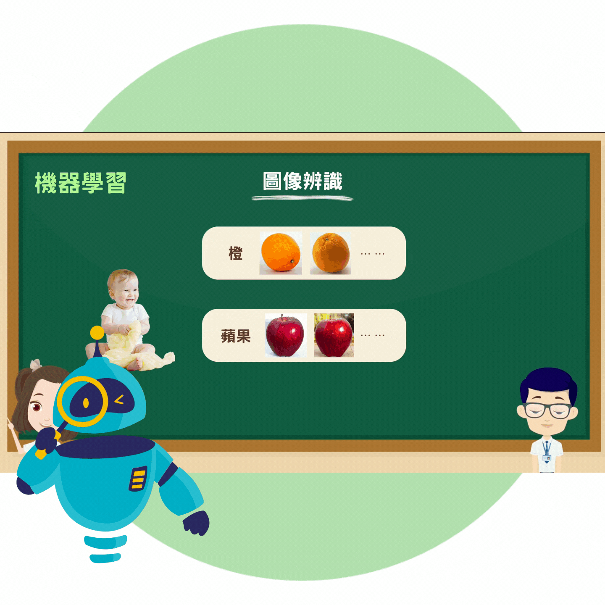
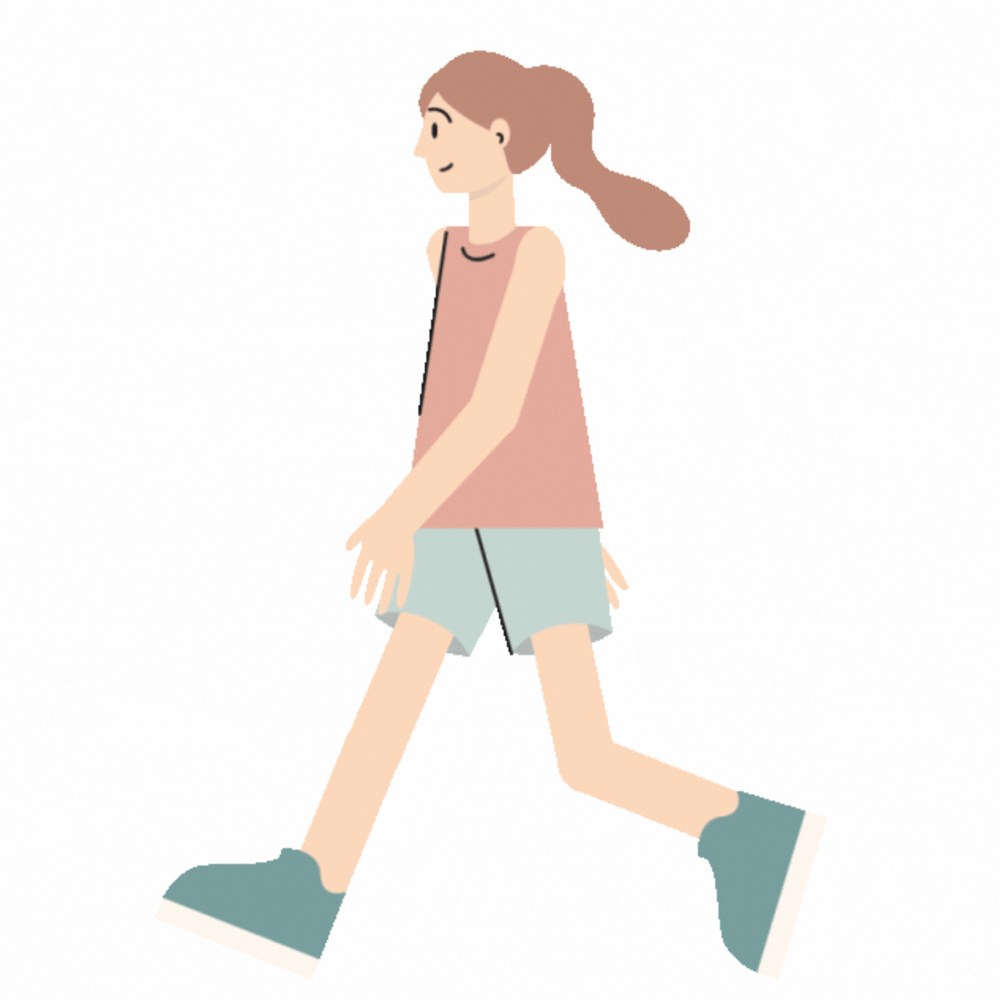
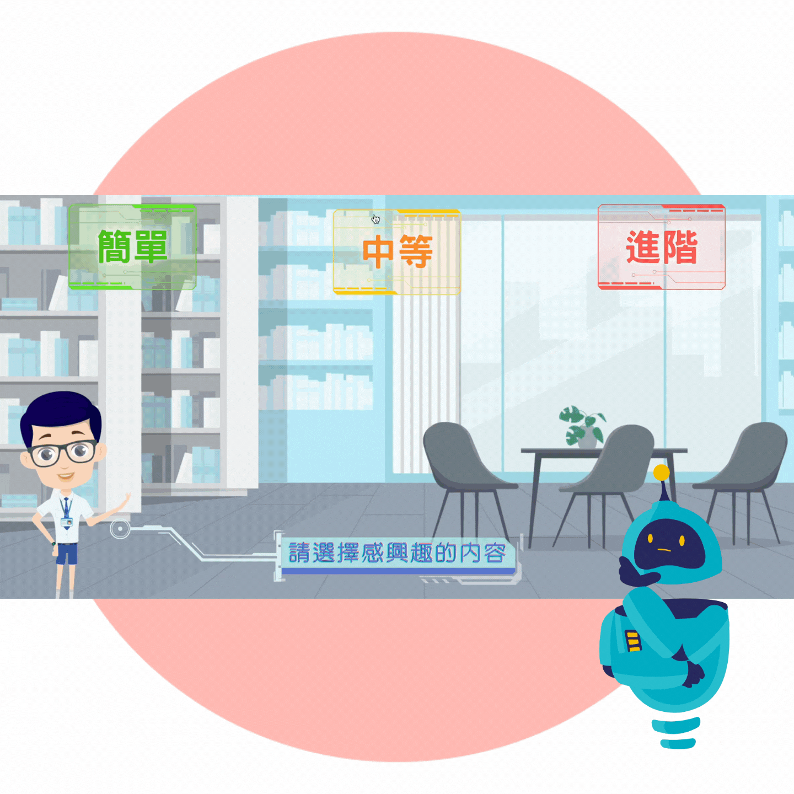

Let's PLAY Let's PLAY Let's PLAY Let's PLAY Let's PLAY Let's PLAY


圖像化講解
採用淺顯易懂的方式，例如故事、影片、流程圖等來解釋AI相關概念，使得學習過程更加輕鬆和有效。透過生動形象的圖像化講解，讓你更直觀地理解複雜的概念！

互動學習
多種互動式學習工具，使你的學習過程充滿趣味，激發你的興趣！同時在實際操作中應用所學知識，深化對AI概念的理解，加強了對知識的消化和記憶！



生活例子
提供實用的AI應用示例，讓你了解AI在日常生活中的應用場景。讓你學會使用AI解決現實問題，將所學知識轉化為實際應用的技能！

知識豐富
具備豐富的AI知識，課題除了人工智能的基本概念和應用，還有現在流行的生成式AI，讓你全面了解AI在現今的應用，同時幫你在未來科技社會裝備自己！
